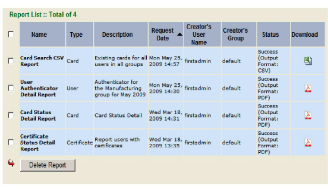

|
IdentityGuard Server 12.0 Administration Guide |
|
IdentityGuard Server 12.0 Administration Guide |
All of the reports you have generated appear on the Report List screen. You can view or delete reports from this screen. Depending on your permissions, you may also be able to delete reports created by other administrators.
You cannot select reports you do not have permission to delete.
To delete reports
1. Log in to the Administration interface. See To log in to the Administration interface.
2. Click Reports.
3. Click List Reports.
The list of existing reports appears.

4. Select the report or reports to delete using the check box beside the report name.
Note: You cannot delete a report when it has a Status of Working.
5. Click Delete Report.
You can also delete a report from the Report Detail screen.